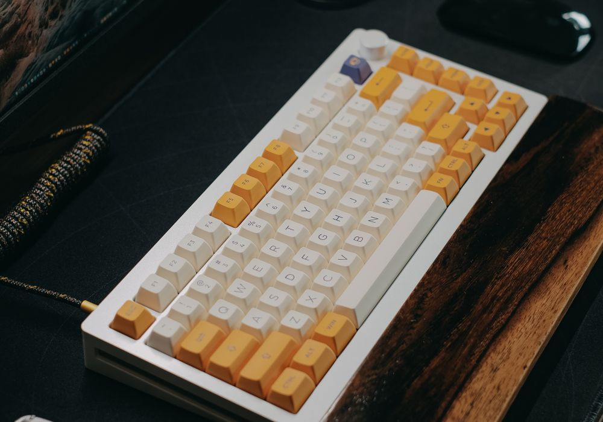

Клавиатура Compact
Compact помогает организовать рабочее место, когда рядом с ноутбуком нужно разместить мышь, тетрадь и учебник. Формат без цифрового блока занимает меньше места, при этом клавиши навигации и функциональный ряд остаются под рукой. Тихий ход клавиш удобен для вечерних занятий и работы в общей комнате.
Клавиатура подключается к совместимому USB-A-порту. Перед выбором проверьте наличие свободного разъёма: для ноутбука только с USB-C может понадобиться переходник. Если вы часто вводите длинные числовые таблицы, сравните компактный формат с полноразмерным — отсутствие цифрового блока подходит не всем.
Кому подойдёт. Для набора конспектов, работы с кодом и документами, если важны свободное место на столе и привычное проводное подключение.
2 400 ₽
| Категория | Клавиатуры |
|---|---|
| Подключение или материал | USB-A |
| Основной параметр | 87 клавиш |
| Особенности | Проводное подключение |